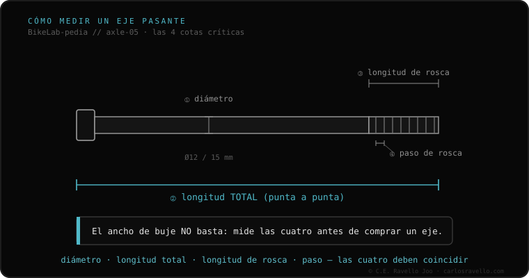

O eixo da sua bike se define por quatro dados, não só um. Primeiro, o tipo: blocagem rápida (QR, uma vareta com alavanca em ponteiras abertas) ou eixo passante (um eixo grosso que se rosqueia ao quadro em ponteiras fechadas). Segundo, a largura do cubo: dianteiro 100 ou 110 mm; traseiro 135, 142, 148 (Boost) ou 157 (Super Boost). Terceiro, o diâmetro: 9 mm (QR) ou 12/15 mm (passante). Quarto, o passo de rosca do eixo passante, que varia por marca. Com esses quatro você acerta a roda e o eixo.
Comprar uma roda ou um eixo sem esses quatro dados é jogar na loteria. Aqui está a ordem exata para identificar o seu.
Olhe primeiro a ponteira do quadro: se a roda sai afrouxando uma alavanca sem desrosquear nada, é blocagem rápida; se você tem que tirar um eixo que se rosqueia, é passante. Depois meça a largura entre ponteiras (100/110 na frente, 135/142/148/157 atrás), o diâmetro do eixo (9 mm QR, 12 ou 15 mm passante) e, se é passante, o passo de rosca. A largura de cubo por si só não basta: dois quadros de 148 mm podem pedir eixos de comprimento e rosca distintos.

A roda entra se a sua largura de cubo coincide exatamente com o seu quadro/garfo e o sistema de fixação é o mesmo (QR ou passante). Um quadro de eixo passante não aceita uma roda de blocagem rápida e vice-versa, salvo cubos conversíveis com tampas (endcaps) intercambiáveis. Antes de comprar, confirme os quatro dados.
Se você não sabe qual eixo, largura ou rosca usa o seu quadro, mande o caso. Diagnóstico real, sem te vender nada. Fale conosco no WhatsApp
Olhe a ponteira: se a roda solta com uma alavanca sem desrosquear nada, é blocagem rápida. Se é preciso tirar um eixo que se rosqueia ao quadro, é passante.
Não. Dois quadros da mesma largura (ex. 148 mm) podem precisar de eixos de comprimento total e passo de rosca distintos. Meça sempre o eixo original.
Meça entre as faces internas das ponteiras: na frente costuma ser 100 ou 110 mm; atrás 135, 142, 148 ou 157 mm.